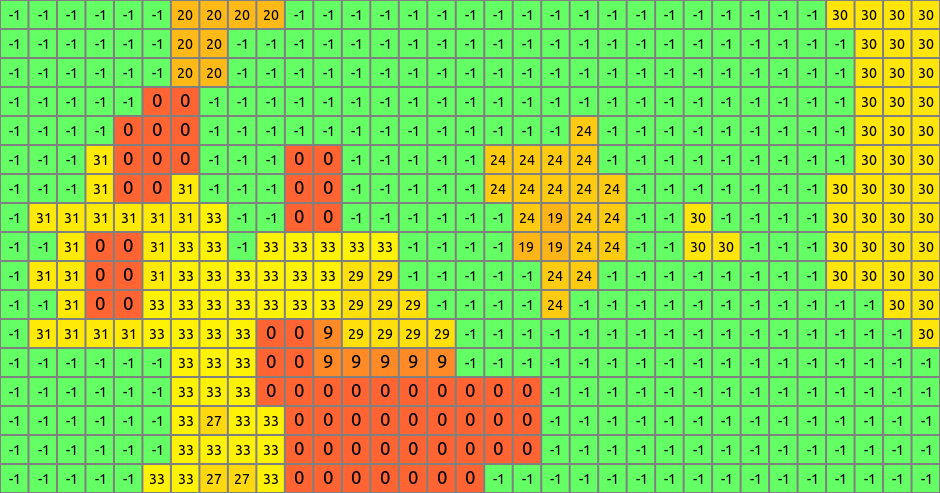

DESCRIPTION
r.futures is an implementation of
FUTure Urban-Regional Environment Simulation (FUTURES)
which is a model for multilevel simulations of emerging urban-rural
landscape structure.
This module uses stochastic Patch-Growing Algorithm (PGA)
and a combination of field-based and object-based representations
to simulate land changes.
The FUTure Urban-Regional Environment Simulation (FUTURES) produces
regional projections of landscape patterns using coupled submodels
that integrate nonstationary drivers of land change: per capita demand,
site suitability, and the spatial structure of conversion events.
The PGA is a stochastic simulation that maps the
allocation and spatial structure of land change using
iterative site selection and a contextually aware region
growing mechanism that changes cells from "undeveloped"
to terminal "developed" states.

Figure: Output map of developed areas

Figure: Detail of output map
EXAMPLE
r.futures -s control_file=demand.txt employ_attraction=d2urbkm interchange_distance=d2intkm road_density=d2rdskm undeveloped=lc96 development_pressure=gdp cons_weight=weight_1 additional_variable_files=slope n_dev_neighbourhood=10 devpot_params=devpotParams.cfg algorithm=stochastic2 parcel_size_file=patch_sizes.txt discount_factor=0.6 probability_lookup_file=probLookup.csv sort_probs=0 patch_factor=1 patch_mean=0.4 patch_range=0.08 num_neighbors=4 seed_search=2 development_pressure_approach=2 alpha=2 scaling_factor=10 num_regions=9 index_file=index control_file_all=demand.txt output=final_results output_series=development
KNOWN ISSUES
Module holds all data in the memory, so for large areas the memory requirements
are high.
Only part of the options is actually working now. The older simpler
implementations of the algorithms are not available.
The inputs are not documented.
REFERENCES
-
Meentemeyer, R. K., Tang, W., Dorning, M. A, Vogler, J. B., Cunniffe, N. J., Shoemaker D. A.,
FUTURES: Multilevel Simulations of Emerging Urban-Rural Landscape Structure Using a Stochastic Patch-Growing Algorithm
Annals of the Association of American Geographers
Vol. 103, Iss. 4, 2013
-
Dorning, M. A, Koch J., Shoemaker D. A, Meentemeyer, R. K.,
Simulating urbanization scenarios under various landscape planning policies reveals trade-offs between disparate conservation goals
[in press]
SEE ALSO
r.mapcalc,
r.reclass,
r.rescale
AUTHORS
Corresponding author:
Ross K. Meentemeyer, rkmeente ncsu edu,
Center for Geospatial Analytics, NCSU
Original standalone version:
Ross K. Meentemeyer *
Wenwu Tang *
Monica A. Dorning *
John B. Vogler *
Nik J. Cunniffe *
Douglas A. Shoemaker *
Jennifer A. Koch **
* Department of Geography and Earth Sciences, UNC Charlotte
** Center for Geospatial Analytics, NCSU
Port to GRASS GIS and GRASS-specific additions:
Vaclav Petras, NCSU OSGeoREL
Last changed: $Date$